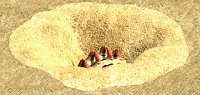
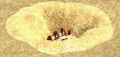
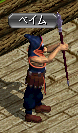
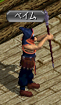

限界突破称号について
物理・知識ともにダメージのカンスト（カウンターストップ：設定されている上限値）は通常２００００であるが、
限界突破称号によって、この数値を増やす事が出来る。
カンストダメの数値は称号レベルによって変わり、以下のようになっている。
受諾可能Ｌｖと祈りのカケラの必要数も合わせて記述する。
| 称号Lv |
Lv１ |
Lv２ |
Lv３ |
Lv４ |
Lv５ |
Lv６ |
Lv７ |
Lv８ |
Lv９ |
Lv１０ |
| クエ受諾可能Ｌｖ |
２００ |
３００ |
４００ |
５００ |
９００ |
未実装 |
未実装 |
未実装 |
未実装 |
未実装 |
| 物理 |
２３０００ |
２６０００ |
２９０００ |
３２０００ |
３５０００ |
− |
− |
− |
− |
− |
| 知識 |
２００００＋
超過分×８％ |
２００００＋
超過分×１６％ |
２００００＋
超過分×２４％ |
２００００＋
超過分×３２％ |
２００００＋
超過分×３６％ |
− |
− |
− |
− |
− |
| 祈りのカケラ必要数 |
２００個 |
４００個 |
１０００個 |
１５００個 |
１５００個 |
− |
− |
− |
− |
− |
| その他の必要物 |
− |
− |
− |
− |
ひび割れた邪念×１０ |
|
|
|
|
|
◆称号Ｌｖ５のクエが実装（１８／１２／１９）
２０１８／１２／１９アップデートにより、
称号Ｌｖ５のクエが実装された。
◆物理ダメの限界突破の数値が変更（１８／１２／１９）
２０１８／１２／１９アップデートにより、
物理ダメの限界突破によるカンストの数値が上方修正された。
| 称号Ｌｖ |
修正前 |
修正後 |
| Ｌｖ１ |
２１０００ |
２３０００ |
| Ｌｖ２ |
２２０００ |
２６０００ |
| Ｌｖ３ |
２４０００ |
２９０００ |
| Ｌｖ４ |
２６０００ |
３２０００ |
| Ｌｖ５ |
− |
３５０００ |
◆知識ダメの限界突破の計算式が％形式に変更（１６／１１／２４）
２０１６／１１／２４アップデートにより、
知識ダメの限界突破仕様が変更され、
上昇値が数値固定から「
２００００を超えた数値×○○％」という計算式に変更された。
例えば、与えた魔法ダメージの理論値が１０万だった場合、
超過分は１０万−２万＝８万となるので、
実際に与えるダメは、称号Lvによって以下のようになる。
限界突破称号Lv１： ２００００＋８００００×０．０８ ＝ ２６４００
限界突破称号Lv２： ２００００＋８００００×０．１６ ＝ ３２８００
限界突破称号Lv３： ２００００＋８００００×０．２４ ＝ ３９２００
限界突破称号Lv４： ２００００＋８００００×０．３２ ＝ ４５６００
◆現在は称号Lv５までしか上げられない
現在は
Ｌｖ５までしかクエが実装されていない。
天上界の報酬「王の証書」でも上げる事が出来ないため、
現状は称号Ｌｖ５までしか上げられない。
祈りのカケラについて
◆祈りのカケラの対象MOBが本体Lｖ±５０の全MOBに変更（１８／６／２７）
２０１８／６／２７アップデートにより、
祈りのカケラの対象MOBが
本体Lv±５０の全MOBに変更になった。
なお、以前の妖精の宝玉は使えないようで、
持ってない人も含め、取り直す必要がある模様。
◆妖精の宝玉をもらって対象MOBを狩る
限界突破クエはどれも最後に必ず、妖精（または長老妖精）から宝玉をもらい、
指定された狩場で祈りのカケラを指定数集めて来る、という流れになる。
祈りのカケラはＲＳのかけらと同様、
ＭＯＢを倒すと一定確率でかばんに入ってくる。
◆同じＩＤ内の出しやすいキャラでクエを受けて集めよう
祈りのカケラは
取引は不可だが、
銀行への預け入れ・引き出しは可。
つまり、
同じＩＤ内であれば共用可能である。
狩場や職によって出しやすさがかなり変わるので、
出しやすいキャラで限界突破を受け、そのキャラで祈りのカケラを集めるのがよいだろう。
ＲＳのかけらと同様、
ドロップ率を上げる課金アイテム（祈りのカケラ探索機、ミニ祈りのカケラ探索機）がある。
課金可能で少しでも効率よく集めたい人は、活用するとよいかもしれない。
◆以前はLvによって狩場と対象MOBが限定されていた
現在は対象MOBが
本体Lv±５０の全MOBになっているが、
以前はLvによって狩場と対象MOBが限定されていた。
参考までに、以前の対象狩場を参考情報として残しておく。
| Lv |
狩場 |
Lv |
狩場 |
| ２００〜２４９ |
ソルティケーブ Ｂ８ |
５００〜５４９ |
呪いを受けたミズナの洞窟／小さな洞窟
呪いを受けたミズナの洞窟／宝石の部屋 |
| ２５０〜２９９ |
名も無い崩れた塔 ８Ｆ
名も無い崩れた塔 １０Ｆ |
５５０〜５９９ |
ゴールド・スワンプ洞窟 Ｂ１
ゴールド・スワンプ洞窟 Ｂ２ |
| ３００〜３４９ |
スウェブタワー Ｂ３ |
６００〜６４９ |
モリネルタワー ４Ｆ
モリネルタワー ５Ｆ |
| ３５０〜３９９ |
トラン森南部 |
６５０〜６９９ |
時の森（１層目、２層目）
疑問の森（全マップ） |
| ４００〜４４９ |
暴かれた納骨堂 Ｂ５
暴かれた納骨堂 Ｂ６ |
７００〜７４９ |
時の森（３層目） |
| ４５０〜４９９ |
ダークエルフ王宮 ２Ｆ
ダークエルフ王宮 ３Ｆ |
７５０〜 |
エルン山 迂回路
乾いたオアシス
漆黒の城
深淵の地底湖 |
 
 
